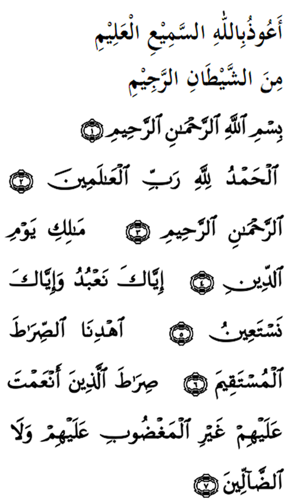

|
Terjemahan Aku berlindung dengan Allah yang Maha Mendengar lagi Maha Mengetahui daripada gangguan syaitan terkutuk. (1) Dengan nama Allah yang Maha Pemurah lagi Maha Pengasih. (2) Segala puji bagi Allah (SWT), Tuhan Semesta Alam. (3) Maha Pemurah lagi Maha Penyayang. (4) Yang menguasai hari pembalasan (kiamat). (5) Hanya Engkaulah yang kami sembah, dan Engkaulah sahaja kami mohon pertolongan. (6) Tunjukkanlah kami jalan yang lurus, (7) (iaitu) jalan orang-orang yang Engkau anugerahkan nikmat kepada mereka; bukan (jalan mereka yang dimurkai) dan bukan pula jalan orang yang sesat. Fadhilat Wirid Dalam satu hadith yang diriyawatkan oleh Ubai Ibn Ka'ab (ra) sesungguhnya Rasulullah (SAW) bersabda "Demi nyawaku yang di dalam kekuasaan-Nya, tidak ada satu surah Taurat, dalam Injil, dalam Zabur dan dalam Al - Furqan seumpamanya (Al-Fatihah).Sesungguhnya ia tujuh ayat yang diulang-ulangkan dari Al-Quran al-'Azim yang diberikan kepada aku." |
 |